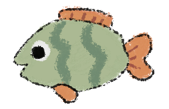
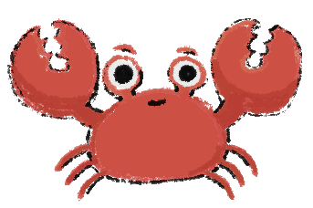
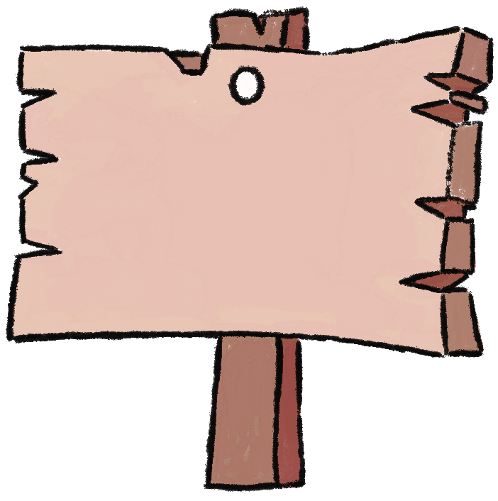

I'll be your guide through this story!

on Hawai'i's
Coral Reefs
Issue


i'm a bleached coral :(

coral bleaching


1893
United States’ overthrow of the Kingdom of Hawaiʻi, dramatically changing the landscape of Oʻahu shores and coral reefs

1900
Sugar cane industry grew, new agricultural techniques were developing. These advances resulted in the introduction of herbicides in the Hawaiian Islands

1950
Hawaiʻi was looked at as an island paradise full of potential economic enterprise for American banks, developers, and agriculture-based corporations. Ocean and coral reef systems became marketing tools to promote Hawaiʻi as a destination paradise

1967
Hanauma Bay on O’ahu established as marine protected area

1996
First major coral bleaching in Hawaii occurred in Kāneʻohe Bay

1998
The US Coral Reef Task Force (USCRTF) was established in 1998 by Presidential Executive Order to lead U.S. efforts to preserve and protect coral reef ecosystems.

2014
Second severe bleaching event around Kauaʻi, Oʻahu, and Maui

2018
Signed the first bill in the country that will ban sunscreens containing chemicals harmful to coral reefs..

hawai'i state flag

Climate change threatens the health of Hawai‘i’s coral reefs and the many species and communities that depend on them.
Green sea turtles (honu) depend on Hawai‘i’s reefs for their food and habitat.
With loss of coral reefs, there’s an increased risk of natural disasters
Reefs help break ocean waves, slowing them down before they crash into the shoreline
Reefs give flood protection to Hawai‘i residents helping prevent millions of dollars in damage each year.
Significant reliance on reef fish as a resource for coastal communities

Is availability of food sources and income for these communities.
Impacts cultural customs and day-to-day life, such as responsible fishing and surfing.
Leaves many native hawaiian animals endangered and leads to a loss of biodiversity
Hawaiian monk seals have been endangered for the past 6 decades and depend on healthy reefs and nearshore habitats to survive.
Hawksbill sea turtles (honu 'ea) are critically endangered and depend on healthy coral reefs for food and shelter.

Influence
environmental influences
- Global warming
- Climate change
- Rising sea levels
- Warming waters
- Ocean acidification
- Changing storm patterns and precipitation
human influences
- Use of herbicides and run-off
- Overtourism
- More beachfront properties and buildings are built causing coastal erosion
- Overfishing
- Pollution
Coral reefs face threats from both environmental influences and human activities.
Responsibility and duty of local residents, tourists, and the government.

Through better education, spreading awareness, and enhance knowledge of human, land, and sea: coral reef interactions
Increased signage to not walk on or take out reefs
